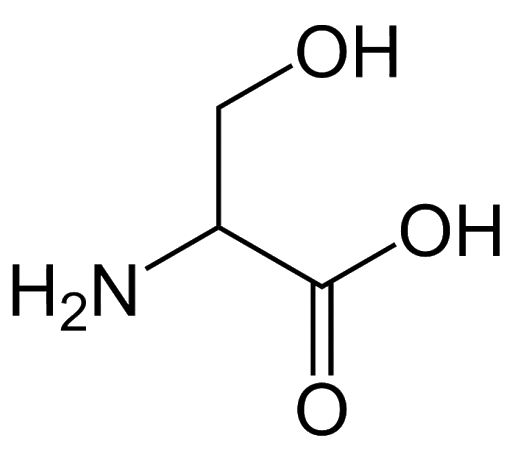
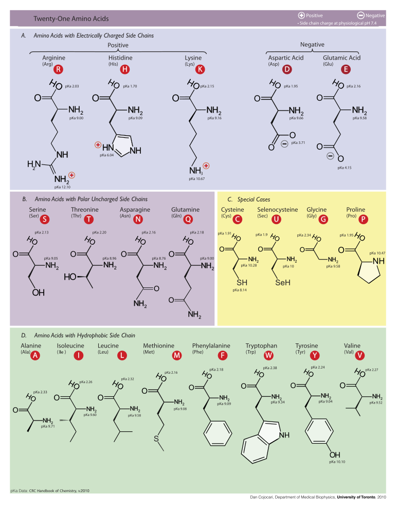

氨基酸(amino acid, AA)是构成蛋白质的基本单位, 作为蛋白质组分的氨基酸(称为蛋白质氨基酸)常见的只有20种(不常见的一般是通过常见氨基酸R基上的某种修饰, 或者通过其他方式衍生而来的), 其中除了脯氨酸是一种亚氨基酸外, 绝大多数是L-α-氨基酸, 即符合右侧的结构通式(但并不是所有满足这一通式的氨基酸都可以出现在蛋白质中). 除了构成蛋白质以外, 氨基酸还可以在其他生命活动中起到功能, 这部分氨基酸称为非蛋白质氨基酸, 在细胞中有大约160种.
在结构式书写时, 把羧基写在α-C上方, 则氨基在左的为L-氨基酸, 氨基在右的为D-氨基酸(有兴趣的同学可以通过强行与甘油醛构型比较, 从而得到这一结论)
因此氨基酸的总体分类及各个分类的下的种类数大致如下:
graph LR;
氨基酸180+ --> 非蛋白质氨基酸160
氨基酸180+ --> 蛋白质氨基酸
蛋白质氨基酸 --> 常见蛋白质氨基酸20
蛋白质氨基酸 --> 非常见蛋白质氨基酸我们知道, 生物体内大多数氨基酸是L-α-氨基酸, 为什么会变成这样呢?
选用α-氨基酸使得肽链骨架上各原子距离减小, 更易相互作用, 使蛋白质的空间构象更稳定, 因此很有可能是必然的. 而自然选择选取L-型氨基酸可能是偶然结果, 这是因为
常见的20种蛋白质氨基酸以及它们的结构式是非常值得记忆的, 毕竟蛋白质是整个生命活动的基础, 氨基酸的特性将决定蛋白质所实现的功能(这一点在具体的生理学学习中将会有更深的体会).

这里我们讨论对于20种常见氨基酸的三种分类方式: 按照结构, 按照化学性质, 按照生理功能.
graph LR;
蛋白质氨基酸 --> 脂肪族氨基酸
蛋白质氨基酸 --> 芳香族氨基酸 --> c6h6(苯丙胺酸Phe, 酪氨酸Tyr, 色氨酸Trp)
蛋白质氨基酸 --> 杂环族氨基酸 --> zh(组氨酸His, 脯氨酸Pro)
脂肪族氨基酸 --> m(中性氨基酸: 甘氨酸Gly, 丙氨酸Ala, 缬氨酸Val, 亮氨酸Leu, 异亮氨酸Ile)
脂肪族氨基酸 --> s(含羟基: 丝氨酸Ser, 苏氨酸Thr)
脂肪族氨基酸 --> ss(含硫元素: 半胱氨酸Cys, 甲硫氨酸Met)
脂肪族氨基酸 --> xa(含酰胺基: 天冬酰胺Asn, 谷氨酰胺Gln)
脂肪族氨基酸 --> cooh(含2羧基: 天冬氨酸Asp, 谷氨酸Glu)
脂肪族氨基酸 --> nh2(含2氨基: 赖氨酸Lys, 精氨酸Arg)按照化学性质. 考虑在水溶液中的电离平衡, 可以将氨基酸分为酸性氨基酸、碱性氨基酸和中性氨基酸三类, 其中酸性氨基酸只有Glu和Asp两个碱性氨基酸只有Lys, Arg和His两个, 剩下的15种都是中性氨基酸.
如果考虑到极性, 则氨基酸可以分为极性氨基酸和非极性氨基酸两类, 凡是分子中不存在羟基、巯基、酰胺基、带电荷基团这样的极性基团的是非极性氨基酸, 而含有这类极性基团的则是极性氨基酸. Gly比较特殊, 介于极性和非极性之间.
按照生理功能. 对于某一类特定生物来说, 一些氨基酸可以自身合成, 而另一些则不能, 只能从外界吸收(实际上是让别人帮它合成). 自身可以合成的氨基酸就称为非必须氨基酸, 而自身不能合成的氨基酸则是必需氨基酸. 对于成年人类来说, 其必须氨基酸包括八种: 甲硫氨酸、色氨酸、赖氨酸、缬氨酸、异亮氨酸、亮氨酸、苯丙氨酸、苏氨酸. 这很容易通过“假设来写一两本书”或“甲携来一本亮色书”来实现记忆. 婴幼儿不能合成的必需氨基酸则在上述巴八种的基础上加上组氨酸. 这说明不仅不同的生物可能具有不同的必须氨基酸, 甚至同一种生物的不同生理阶段也可能具有不同的必须氨基酸.
最后, 中性氨基酸中的三类, 缬氨酸、亮氨酸和异亮氨酸由于可以通过某种方式促进肌肉组织的生长, 因此被统称为支链氨基酸(这对于健身爱好者来说是非常重要的).
上面提到, 不常见的氨基酸一般是通过常见氨基酸R基上的某种修饰, 或者通过其他方式衍生而来的. 举两个例子: 4-羟脯氨酸和5-羟赖氨酸存在于胶原蛋白中. 其中4-羟脯氨酸参与形成螺旋链间的氢键, 起到稳定胶原三螺旋的作用; 而5-羟赖氨酸是胶原蛋白结合糖基的部位; 另外, 锁链素(由四个Lys衍生而来)存在于弹性蛋白中, 使肺和血管具有伸展性.
非蛋白质氨基酸也在生命活动中起到很重要的功能, 例如作为尿素循环中间产物的鸟氨酸和瓜氨酸, 就是两种典型的非蛋白质氨基酸.
氨基酸固态时为白色晶体, 不同氨基酸结晶形状不同. 熔点较高, 大于200℃, 这是因为氨基酸晶体是离子晶体. 氨基酸大都溶于水, 在20种常见氨基酸中脯氨酸溶解度最大, 酪氨酸和胱氨酸溶解度最小.
所有氨基酸在可见光区都没有光吸收. 芳香族氨基酸由于具备苯环结构, 在近紫外区域具有光吸收, 色氨酸和酪氨酸的最大吸收峰在280nm处, 尤以色氨酸为最大, 苯丙氨酸最大吸收峰在260nm处, 280nm处最弱. 最终蛋白质表现出的最大吸收峰在280nm处.
色氨酸和酪氨酸和最终蛋白质的最大吸收峰表现一致(280nm),而苯丙氨酸最大吸收峰却恰好落在核酸的最大吸收峰上(260nm).
氨基酸是一类两性电解质, 氨基酸完全质子化时可以看作一个多元酸, 酸性(2)和碱性(3)氨基酸可以看作三元酸, 其他氨基酸(15)可看作二元酸.
等电点(pI)是氨基酸处于兼性离子状态下的pH值, 计算方法是取兼性离子两边的pK值取平均数, 对于不带电氨基酸 \[ pI = \frac{pK_1 + pK_2}{2} \]
对于酸性氨基酸: \[ pI = \frac{pK_1 + pK_R}{2} \]
对于碱性氨基酸: \[ pI = \frac{pK_R + pK_2}{2} \] 氨基酸在等电点时的溶解度最小, 容易沉淀. 利用这一性质可以分离制备某些氨基酸.
由于同时具备\(\alpha\)-氨基和\(\alpha\)-羧基, 氨基酸可以参加以下反应:
氨基酸通过脱水缩合的方式形成多肽. 具体机制是: 一个氨基酸分子的氨基和另一个氨基酸分子的羧基连接, 同时脱去一分子水, 在两个氨基酸残基之间形成肽键. 这样的缩合产物就是一个二肽. 通过类似的反应迭代进行就可以生成长长的多肽链.
如果有\(n\)个氨基酸脱水缩合形成\(m\)条肽链, 那么所形成的肽键数满足: 肽键数=氨基酸数-肽链数. 注意到一个肽键就等价于脱去一个水分子(分子量为18), 因此脱水缩合所损失的分子量就是 18*(氨基酸数-肽链数).
两个甲硫氨酸的\(\ce{-SH}\)之间连接形成二硫键\(\ce{- S -S -}\), 同时脱去\(\ce{2H}\), 因此每个二硫键减少的分子量是2.